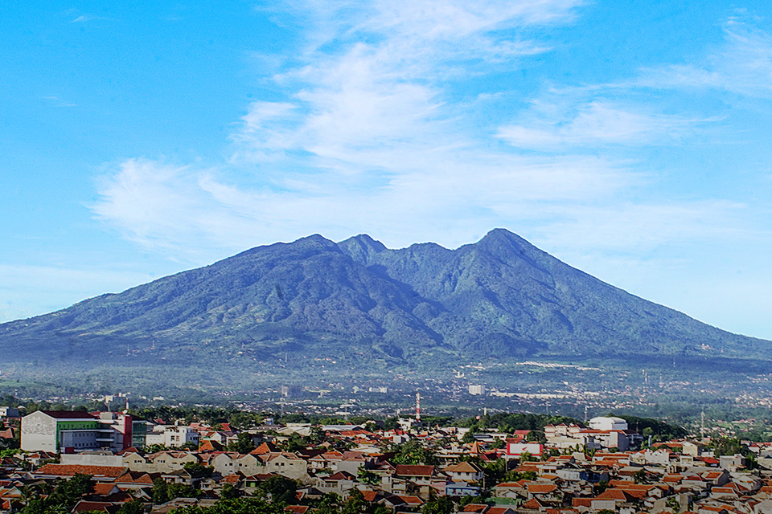

Gunung Salak
Lokasi: Jawa Barat | Status: Aktif
Gunung Salak merupakan salah satu gunung berapi yang paling ikonik di Jawa Barat. Dikenal dengan hutannya yang sangat lebat dan jalur pendakian yang menantang, gunung ini juga menjadi rumah bagi puluhan air terjun (curug) yang jernih dan asri.